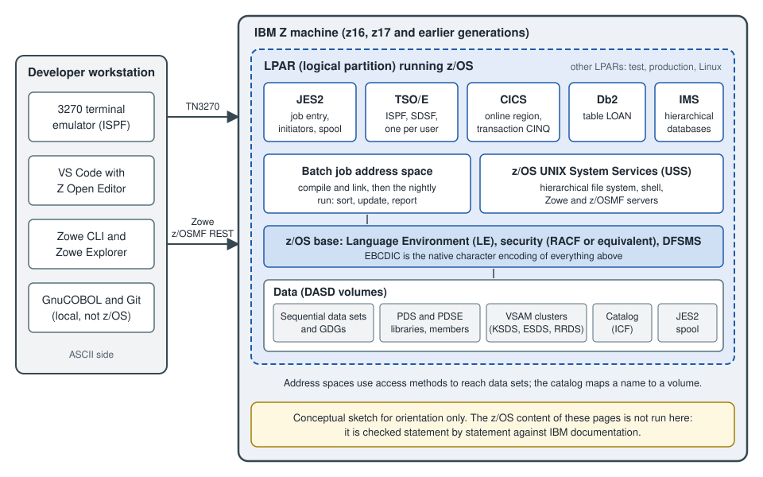

Mainframe Environment Primer
|
This content was generated with the assistance of AI and should be verified against the official documentation before being relied on in production. |
This page is written against ISO/IEC 1989:2023 (edition 3, January 2023; a 4th edition is upcoming), IBM Enterprise COBOL for z/OS 6.5 (PTFs through September 2026) running on z/OS 3.2, and GnuCOBOL 3.2, and it was checked on 2026-10-20. It is the one page of the section that is about the platform rather than the language: the other pages explain COBOL statements, and this one explains the machine, the operating system, the files and the tools around the code that a COBOL programmer on IBM Z has to know before the first job runs. Most COBOL in production still runs there, so the vocabulary matters even for a developer who writes and tests everything with GnuCOBOL on a laptop.
Nothing on this page that is specific to z/OS was run: there is no z/OS system in the verification environment, and
nobody signed in to IBM Z Xplore or any other mainframe service on the reader’s behalf. The JCL and the ISPF and SDSF
descriptions are therefore labelled "z/OS; not run here" and were checked against the IBM documentation listed in the
references. Only the EBCDIC collating-sequence example is portable; it was compiled with cobc -x -Wall (GnuCOBOL 3.2.0,
also with -std=ibm) and run, and its output is real. Vendor-neutral facts that vary by installation (data-set high-level
qualifiers, job classes, procedure library names) are written the way IBM’s own examples write them: as values a site
chooses. The running example is Circulation, the library back office of this section, whose data sets are named
USERID.CIRC.BOOKMAST, USERID.CIRC.MEMBMAST and USERID.CIRC.LOANTRAN; USERID stands for the programmer’s own user
ID.
The structure follows how a developer meets the platform. The Compilers and Dialects page lists the compilers; JCL for COBOL Programmers explains job control in depth; Data Sets and Mainframe Utilities covers allocation and the utility programs; and Modern Tooling: VS Code and Zowe covers the workstation side. This page is the map that connects them.
The system at a glance

Figure: a z/OS system as a COBOL developer sees it. The sketch is conceptual and not drawn from any IBM documentation.
Read the figure from the outside in. A mainframe here means an IBM Z machine. The hardware generations are known by
name: z13, z14, z15, z16 (2022) and z17 (2025). The compiler is tuned for a generation through the ARCH and TUNE
options; Enterprise COBOL 6.5 adds ARCH(15) and TUNE(15) for the z17, removes ARCH(10), and makes ARCH(11) the
default, so a program compiled without options runs on a much older machine than the one that hosts it. A single machine
is divided into logical partitions (LPARs) by the firmware hypervisor (PR/SM), and each LPAR runs its own copy of an
operating system. A shop typically has separate LPARs for development, test and production, so a program moves from one
to the next by being rebuilt or by copying its load module, and the same data-set names can exist in each. The
operating system for COBOL is z/OS, currently version 3.2 (generally available on 30 September 2025). Other IBM Z
operating systems exist (z/VM, z/VSE and Linux on IBM Z), and COBOL runs on some of them, but the rest of this section
means z/OS unless it says otherwise.
Inside z/OS, work is organized into address spaces: each started task, each batch job, each TSO user and each CICS or
Db2 region has its own virtual storage. JES2 reads jobs and holds their output, TSO/E gives each user an interactive
session, CICS runs online transactions, Db2 and IMS are database managers, and z/OS UNIX System Services (USS) provides
a UNIX-style file system and shell. All of them reach the disks through the data-set machinery of DFSMS, described below.
The Language Environment (LE), covered in
Compiling, Linking and Language Environment, is the runtime that a
compiled COBOL program calls for storage, messages, condition handling and the CALL interface.
Batch and online work
Mainframe workloads fall into two families, and a COBOL programmer usually writes for both.
| Aspect | Batch | Online (OLTP: online transaction processing) |
|---|---|---|
How work starts |
A job is submitted and waits for an initiator; it can run in the evening or on a schedule |
A user at a terminal or a service sends a request, and the transaction manager starts a program for it |
Typical duration |
Minutes to hours, processing millions of records |
Milliseconds to a few seconds per request |
Data access |
Whole files, read sequentially or sorted; VSAM and Db2 in bulk |
One record or one row per request, by key |
Runtime |
Job step in a batch address space under JES2 |
A CICS or IMS region that stays up and runs many transactions |
Unit of failure and restart |
The step or the job; restart from a checkpoint or rerun after fixing the data |
The transaction, which commits or backs out as a unit |
Circulation example |
The nightly run that validates |
The |
Where it is covered |
Batch is the original style of COBOL: a program reads a file, processes it record by record and writes another file,
and that structure is why so much of the language is about files. Online programs trade volume for latency and are
written as short, stateless units that a transaction manager runs; they cannot use the OPEN of a sequential file in
the same way, and most of the EXEC CICS or EXEC SQL statements they contain are translated before compilation.
Data sets
A data set is the z/OS word for a file. Unlike the byte stream of a UNIX file, a traditional data set has a record
format chosen when it is created, and the system keeps it in blocks on a disk volume (DASD). The COBOL FD and the data
set must agree on what a record is, so the attributes below appear throughout the section.
| Attribute | Meaning |
|---|---|
|
|
|
|
|
The record length in bytes; for variable formats it includes the 4-byte record descriptor word, so the COBOL record is 4 bytes shorter |
|
The size of one physical block; most shops let the system determine it by coding 0, and the system chooses the best size for the device |
Space |
Tracks, cylinders or blocks, with a primary and a secondary quantity; running out of space ends a job with an abend such as |
Circulation’s master files are fixed-length and blocked: USERID.CIRC.BOOKMAST and USERID.CIRC.MEMBMAST have
RECFM=FB and LRECL=60, and USERID.CIRC.LOANTRAN has RECFM=FB and LRECL=30, which are the byte counts of the
BOOKREC, MEMBREC and LOANREC layouts used across this section.
Kinds of data sets
-
Sequential (
PS): records stored one after another and read from the first. Most batch input and output, and all report output, are sequential. A COBOLORGANIZATION IS SEQUENTIALfile withACCESS MODE IS SEQUENTIALmaps to this. See Sequential Files. -
Partitioned (PDS and PDSE): a library with a directory and named members, each of which is like a small sequential file. A source library such as
USERID.CIRC.COBOLholds one member per program, a copybook library such asUSERID.CIRC.COPYLIBholdsBOOKREC,MEMBRECandLOANREC, and a load library such asUSERID.CIRC.LOADLIBholds the executable programs. A PDSE (partitioned data set extended) is the modern form: it reuses freed space automatically, has no fixed directory size and can hold program objects. Members are addressed asUSERID.CIRC.COPYLIB(BOOKREC), and a member name is at most 8 characters. -
VSAM (Virtual Storage Access Method): keyed and relative storage managed by the access method rather than by the program. A KSDS (key-sequenced) is the indexed file of COBOL, an ESDS (entry-sequenced) is an append-only sequence, an RRDS (relative record) is a table of numbered slots, and an LDS (linear) is a byte array that Db2 uses. Clusters are created with the IDCAMS utility. See Indexed Files and VSAM and Relative Files.
-
Generation data groups (GDGs): a family of sequential data sets related by one base name, whose members are generations named
G0001V00and so on. Jobs refer to them relatively:(+1)creates the next generation and(0)and(-1)read the current and the previous one. The nightly Circulation run uses a GDG for each day’s transaction file, so that last night’s input can be reread. The JCL is explained in JCL for COBOL Programmers. -
z/OS UNIX files are not data sets; they live in the hierarchical file system and are described in the USS section below.
Catalogs and names
A catalog maps a data-set name to the volume that holds it and its attributes, so that a program (or a DD
statement) can refer to USERID.CIRC.BOOKMAST without saying which disk it is on. There is a master catalog and any
number of user catalogs, all of them integrated catalog facility (ICF) catalogs, and an alias in the master catalog
points a high-level qualifier at the right user catalog. A data set that is not cataloged can be used only if the
volume is named in the job.
The naming rules follow from the way the catalog is searched:
-
A name is made of qualifiers separated by periods, and the whole name, including the periods, is at most 44 characters.
-
Each qualifier is 1 to 8 characters. The first character is a letter or one of the national characters (
@,#and$, whose code points depend on the code page); the others may also be digits or a hyphen. -
The first qualifier, the high-level qualifier (HLQ), is usually the user ID or a project code, and security rules (RACF profiles or an equivalent product) are keyed on it.
-
A member name in parentheses is part of the reference, not of the name, and has its own limit of 8 characters.
Taken together, USERID.CIRC.BOOKMAST is three qualifiers of 6, 4 and 8 characters, 21 characters long with the
periods, and the first qualifier is the HLQ. The exact rules, including the extra restrictions on GDG base names and on
names of VSAM components, are in the IBM manual DFSMS Using Data Sets.
TSO/E and ISPF
TSO/E (Time Sharing Option extensions) is the interactive session a user gets, and ISPF (Interactive System
Productivity Facility) is the full-screen menu system that runs inside it. A developer reaches it with a 3270
terminal emulator that speaks TN3270 to the mainframe, and a function key map (PF3 to leave, PF7 and PF8 to scroll,
PF12 to cancel) that depends on the emulator’s configuration. The first screen is a menu of numbered options; the ones
below are the ones a COBOL programmer uses all day.
| Option | What it does |
|---|---|
|
Edit a member or a sequential data set; line commands ( |
|
Allocate, rename, delete and display information about a data set or a PDS member, so the |
|
List the data sets under a prefix such as |
|
Copy members between libraries |
|
Open the system display and search facility, described next |
Option numbers and the way SDSF is reached are set by the installation and can differ from this table. ISPF line
commands and primary commands in the editor take a few minutes to learn, and a short exercise is to create the
USERID.CIRC.COBOL library with option 3.2, create the member LOANUPD in it with option 2, type the program and
submit the job that compiles it.
SDSF and the JES2 spool
JES2 (Job Entry Subsystem 2) accepts a submitted job, queues it by its job class, and hands it to an initiator,
which is the batch address space that runs the steps one after another. JES2 also keeps everything the job writes to
SYSOUT data sets. That storage is the spool, and a job’s listing, messages and report stay on it until somebody
purges them. A job gets a job name (the name on the JOB statement) and a job number (JOB followed by digits) that
identifies one run.
SDSF (System Display and Search Facility) is the ISPF application that displays the spool and the queues. A COBOL programmer uses a few panels and commands:
| Panel or command | Use |
|---|---|
|
Display active jobs |
|
Status of jobs in the queue ( |
|
Held output (jobs whose output class is a held class) |
|
Limit the list to the job names or owner that you want |
|
Open the job’s output; |
|
Delete the job and its output from the spool when the output is no longer needed |
For a compile-and-run job the output is a set of SYSOUT data sets: the job log (JESMSGLG), the JCL listing
(JESJCL), the system messages (JESYSMSG), the compiler listing, the link-edit map and what the program displays.
The return code of each step (RC=0000 for success, 4 for warnings, 8 for errors, 12 and 16 for severe problems by
convention) and the abend code, if any, are the first things to read. An abend such as S0C7 (a data exception: the
program used non-numeric data in a numeric field) or S0C4 (a protection exception, usually a wrong address or
subscript) is explained, with its fix, in Debugging and Troubleshooting.
z/OS UNIX System Services
z/OS UNIX System Services (USS) is the part of z/OS that provides a POSIX-style hierarchical file system (usually
zFS), a shell (reached with the OMVS command in TSO, or with SSH) and a C library interface. For COBOL it matters in
four ways.
-
Compilation.
cob2is the command-line front end of the Enterprise COBOL compiler in the shell. PTF PH72005 for Enterprise COBOL 6.5 (July 2026) extendedcob2and z/OS UNIX support; the compiler options are listed in Compiling, Linking and Language Environment. -
Files. A COBOL program can read and write USS files, and
ORGANIZATION IS LINE SEQUENTIALis supported only for files in the hierarchical file system, never for traditional data sets. A tagged file (chtag) carries its code page, so that tools can convert text between EBCDIC and ASCII-based encodings correctly. -
Tooling. Zowe and many open-source tools on z/OS run on top of USS; Git for z/OS and the SSH daemon are USS programs.
-
Interoperability. Java and C programs on z/OS run in USS and can call COBOL, and the reverse, as described in Interoperability with C, Java and Python.
Where the book Modern Mainframe Development (Taulli, O’Reilly 2022) reads an ASSIGN TO "Customers.dat" file with
LINE SEQUENTIAL next to z/OS JCL, the two ideas must not be mixed: on z/OS a traditional data set is reached through
a DD name, and LINE SEQUENTIAL belongs to the USS file system, as in the paragraph above.
EBCDIC and code pages
IBM mainframes store characters as EBCDIC (Extended Binary Coded Decimal Interchange Code), an 8-bit encoding that is
older than ASCII and not a superset of it. Every character literal in a COBOL program compiled on z/OS is stored as an
EBCDIC byte, and every PIC X field and every text data set holds EBCDIC unless a code page says otherwise. Some
code points differ from ASCII in ways that matter:
| Character | EBCDIC (code page 037) | ASCII |
|---|---|---|
space |
|
|
|
|
|
|
|
|
|
|
|
|
|
|
|
|
|
Four consequences follow for a COBOL programmer:
-
Collating order differs. In EBCDIC a space sorts before letters, lowercase letters sort before uppercase letters, and letters sort before digits, so
"A1"sorts before"1A"on z/OS but not on an ASCII host. A key that is sorted or compared as characters sorts differently in the two worlds. The alphabet is also not contiguous: there are gaps betweenIandJ, and betweenRandS, which breaks code that assumes that consecutive letters have consecutive codes. -
The code page matters. Code page means the exact mapping of the 256 byte values; common ones are 037 (United States and Canada) and 1047 (Latin 1 / Open Systems, which is the usual one for USS). They agree on the letters and digits and differ on a few punctuation characters, notably the square brackets and the caret, so that text can look right in one tool and wrong in the other.
-
Only text is converted. A file moved to a workstation in text mode is converted record by record from EBCDIC to ASCII, and that conversion would destroy a binary field. Packed-decimal (
COMP-3) and binary (COMP) fields are bytes, not characters, and must not be translated, so a record layout with numeric fields is transferred in binary mode or its numeric fields are first converted toDISPLAYwith a sign. This is one reason a data exchange format such as JSON or XML (see JSON GENERATE and PARSE) is preferred at a system boundary. -
Signs are zoned. A zoned-decimal (
DISPLAY) number carries its sign in the last byte, and the sign nibble differs between EBCDIC and ASCII, so a file of signed fields cannot be read on the other platform without conversion.
The National, UTF-8 and Code Pages page covers the NATIONAL and UTF-8 data
types and the CODEPAGE compiler option in full. Here a short example shows the first consequence, the collating
order, running on any host.
The same bytes, a different order
GnuCOBOL on a workstation stores PIC X fields as ASCII, and Enterprise COBOL on z/OS stores them as EBCDIC. The two
programs below are identical except that the first declares the alphabet EBCDIC and makes it the program collating
sequence, so the comparison orders the characters as an EBCDIC machine would, while the stored bytes stay as they are.
IDENTIFICATION DIVISION.
PROGRAM-ID. SORTORDER.
ENVIRONMENT DIVISION.
CONFIGURATION SECTION.
OBJECT-COMPUTER. CIRC-HOST
PROGRAM COLLATING SEQUENCE IS EBCDIC-ORDER.
SPECIAL-NAMES.
ALPHABET EBCDIC-ORDER IS EBCDIC.
DATA DIVISION.
WORKING-STORAGE SECTION.
01 WS-CODE-A PIC X(2) VALUE "A1".
01 WS-CODE-B PIC X(2) VALUE "1A".
PROCEDURE DIVISION.
MAIN-PARA.
DISPLAY "Stored bytes: " FUNCTION HEX-OF(WS-CODE-A) " "
FUNCTION HEX-OF(WS-CODE-B)
IF WS-CODE-A < WS-CODE-B
DISPLAY "A1 sorts before 1A"
ELSE
DISPLAY "1A sorts before A1"
END-IF
STOP RUN.Stored bytes: 4131 3141
A1 sorts before 1AThe stored bytes 41 31 and 31 41 are the ASCII codes of A1 and 1A, so the data did not change; only the order did,
because letters come before digits in EBCDIC. The second program is the same source with the PROGRAM COLLATING SEQUENCE
clause removed (its OBJECT-COMPUTER paragraph ends after CIRC-HOST), so it uses the native ASCII order:
Stored bytes: 4131 3141
1A sorts before A1A pitfall is to name the alphabet in PROGRAM COLLATING SEQUENCE and forget to define it in SPECIAL-NAMES. This is a
deliberately wrong version (the ALPHABET entry and the SPECIAL-NAMES header removed) and the real diagnostics of
cobc -x -Wall:
badorder.cob:6: error: 'EBCDIC-ORDER' is not defined
4 | CONFIGURATION SECTION.
5 | OBJECT-COMPUTER. CIRC-HOST
6 > PROGRAM COLLATING SEQUENCE IS EBCDIC-ORDER.
7 | DATA DIVISION.
8 | WORKING-STORAGE SECTION.
badorder.cob:6: error: 'EBCDIC-ORDER' is not an alphabet-nameOn z/OS the comparison in the first program needs no clause, because the native collating sequence already is EBCDIC. The rest of this section compiles its examples with GnuCOBOL on ASCII hosts, so output that depends on character order (a sort of alphanumeric keys, for instance) is labelled where the z/OS result would differ.
A developer’s day
This sketch follows one Circulation change, a fix to the loan update program LOANUPD, from edit to the spool. It is
a consulted overview: the mainframe workflow is described the way IBM and the Zowe documentation describe it, and it
was not run here.
| Step | Where | What happens |
|---|---|---|
1. Edit |
ISPF option 2, or VS Code with IBM Z Open Editor and Zowe Explorer |
The source member |
2. Compile and link |
A JCL job calling a catalogued procedure |
A compile-and-link procedure (for example |
3. Submit |
ISPF |
JES2 reads the job, assigns a job number and queues it |
4. Run |
A second job step, or a second job |
The program runs in a batch address space with its files allocated by |
5. Read the output |
SDSF, or |
The compiler listing and messages, the return code and the program output are in the spool |
6. Fix and repeat |
The editor |
A compile error or a bad return code leads back to step 1 |
7. Promote |
Source control and the shop’s pipeline |
Modern shops keep source in Git and promote by a pipeline; older shops use a change-management product |
A minimal job for steps 2 to 4 looks like this. The JOB statement names the job and its classes, EXEC IGYWCL runs the
compile and link procedure, and its COBOL.SYSLIB and COBOL.SYSIN overrides tell the compiler where the copybooks
and the source are (it is SYSLIB that resolves COPY, not a copy step). The second step runs the new load module with
the Circulation data sets named by their DD names. Everything here is z/OS; not run here.
//CIRCJOB1 JOB (ACCT),'CIRC UPDATE',CLASS=A,MSGCLASS=H,NOTIFY=&SYSUID
//COMPILE EXEC IGYWCL
//COBOL.SYSLIB DD DISP=SHR,DSN=USERID.CIRC.COPYLIB
//COBOL.SYSIN DD DISP=SHR,DSN=USERID.CIRC.COBOL(LOANUPD)
//LKED.SYSLMOD DD DISP=SHR,DSN=USERID.CIRC.LOADLIB(LOANUPD)
//RUN EXEC PGM=LOANUPD
//STEPLIB DD DISP=SHR,DSN=USERID.CIRC.LOADLIB
//BOOKMAST DD DISP=SHR,DSN=USERID.CIRC.BOOKMAST
//LOANTRAN DD DISP=SHR,DSN=USERID.CIRC.LOANTRAN
//SYSOUT DD SYSOUT=*Source: IBM Enterprise COBOL for z/OS documentation library: Programming Guide, "Compiling under z/OS" and z/OS MVS JCL Reference
The job is explained, statement by statement, in JCL for COBOL Programmers. The
name IGYWCL, the job class, the MSGCLASS and the procedure library are installation conventions, so a real shop’s
version has different values. In the program, the DD name LOANTRAN is reached through SELECT LOAN-TRANSACTIONS ASSIGN
TO LOANTRAN, as described in File Concepts, SELECT and FD.
Getting to a mainframe without owning one
A developer who has no employer-provided system has three routes. IBM Z Xplore is IBM’s learning platform, which gives learners access to a hosted z/OS environment through exercises and challenges. The Open Mainframe Project COBOL Programming Course is a free course that teaches COBOL with VS Code and Zowe. And GnuCOBOL 3.2 on a workstation runs everything portable in this section, which is the tool used to verify the examples. The first page of the section, Getting Started with COBOL, gives the installation steps.
Where the book is outdated
Modern Mainframe Development (Tom Taulli, O’Reilly, 1st edition, March 2022) is a survey-level introduction whose chapters 2 and 3 describe the environment on this page. It was consulted as an overview for the topics covered here and nothing is copied from it. Its platform facts were current for its publication date and have since moved:
| The book says | Current as of 2026-10-20 |
|---|---|
z/OS 2.4 |
z/OS 3.2 (generally available 30 September 2025) |
The z15 is the newest mainframe |
The z16 (2022) and the z17 (2025) are newer; Enterprise COBOL 6.5 adds |
IBM’s free 180-day z/OS access |
IBM Z Xplore |
Zowe v1 and its prerequisites (an old Node.js and Java 8) |
Zowe 3.x |
OpenCobolIDE as the PC environment |
No longer maintained; use GnuCOBOL 3.2 with VS Code |
Micro Focus products and tooling |
Now part of Rocket Software (Rocket Visual COBOL, Rocket Enterprise Developer) |
Tooling from the book’s sponsor (BMC and Compuware products) |
Named only in prose here, alongside IBM, Broadcom and open-source equivalents; the book’s demos are not reproduced |
Common mistakes
-
Treating a data set as a byte stream. A record has a length and a format. A program that reads
USERID.CIRC.BOOKMASTwith a record longer than the data set’sLRECLfails or truncates, and theFDand the data set disagree at run time rather than at compile time. -
Forgetting that members are not data sets. A PDS member is one name inside a library; allocating a library without a member name and trying to read it as a sequential file gives an error from the system, not from the program.
-
Comparing or sorting text without knowing the platform. A sort key built from letters and digits gives a different order on ASCII and EBCDIC hosts; test with the collating sequence of the production system.
-
Converting a whole file as text. Moving a record with packed or binary fields in text mode corrupts it.
-
Assuming the example job names are universal. Job classes, procedure names, HLQs and ISPF option numbers are set by the installation; use the shop’s standards.
-
Leaving old job output on the spool. Purge it when you are done, because spool space is shared and a full spool stops the whole system.
References
-
IBM z/OS 3.2 documentation and the PDF library at z/OS DFSMS Using Data Sets, z/OS MVS JCL Reference, z/OS MVS JCL User’s Guide and z/OS UNIX System Services User’s Guide
-
IBM Enterprise COBOL for z/OS 6.5 documentation and the Enterprise COBOL for z/OS documentation library
-
O’Reilly: Tom Taulli, Modern Mainframe Development (publisher page)